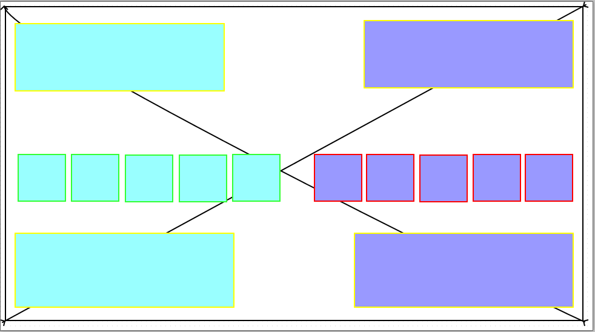
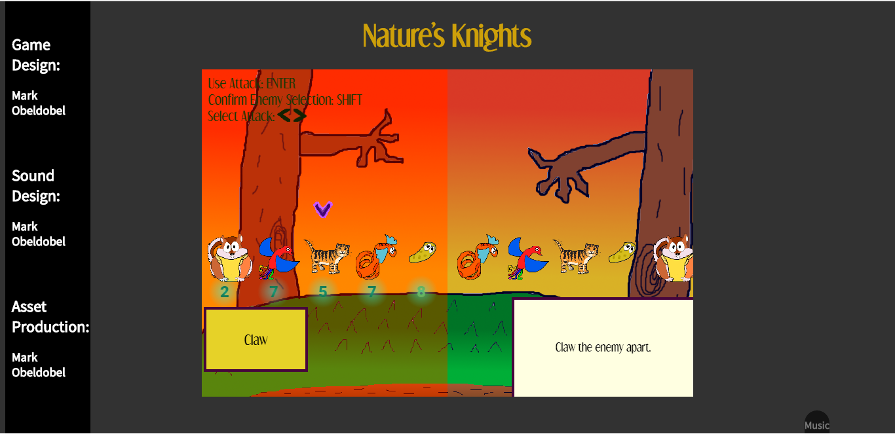
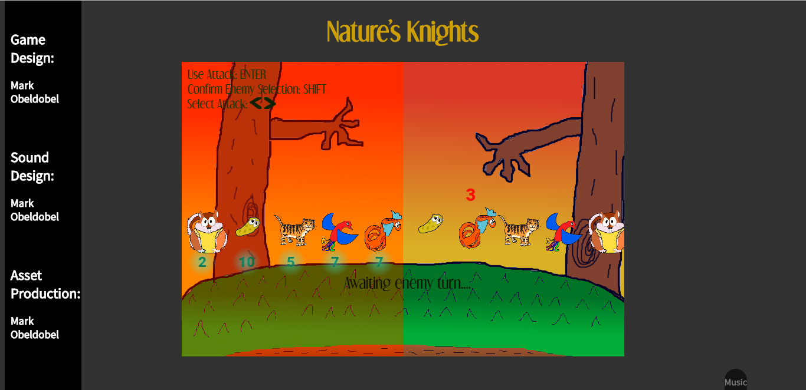

The left side with green and yellow outline is player 1, the host, while the right side with red and yellow outline is player 2. Yellow means that the other player never sees the information displayed in that section. The above yellow-outline section is for choices while the bottom yellow-outline section is for the chracters' stats.
If you go to the game and play against another player, you will see something of this nature (pun completely intended).
 Nature's Knights is a two-player turn-based game where the players each get a team of low-scaling characters with strengths and weaknesses, order themselves in a line, and battle .The characters are different animals and possess a cartoon-like quality. This game is highly inspired by Paper Mario: The Thousand Year Door, both in simplistic art style and mechanics. The player has a team of five characters and they fight each other. Specific stats have unique features, like flying, defense, or what enemies it can target. Move order is based upon speed, one of the stats of the character. Speed determines quite a few of the server calculations.
The game has a decently smooth UI and good page design, despite being a short page. I composed music for the game, which can be found in the bottom right corner of the game. It also feels very much like a complete game with great potential for improvement. In fact, there are entire portions of code that are useless for the game right now but would be important if I wanted to continue working on it, and I definitely want to continue working on it. Despite how bad the artwork may be, I'm also proud that I found the opportunity to do that myself.
There are still a few UI bugs I can't figure out, like characters shaking as if they got hit when they should not be. It has no effect on the mechanics though. It also isn't a game with great replay value, as both players currently get a mirror map of characters. Only five characters are in the game right now.
Boy, where do I start? I want to add poison and burning as features, as well as spiked enemies. And more special features characters can possess keep cropping up in my head. I'd like to add more attack types and sound effects for attacks to add to immersion. I absolutely need to create more characters to make a more dynamic game.
To play the game, you are given a ticket when you enter the game. The server keeps track of whether you are an odd or even tickeet, and assigns you to the corresponding enemy. I've found it's a bit frustrating to get players to be in the right state before starting a game, but once it starts the game is a nice, short, and sweet iteration cycle and you can join another game. The end result is a series of rooms with 1v1 games in each one.